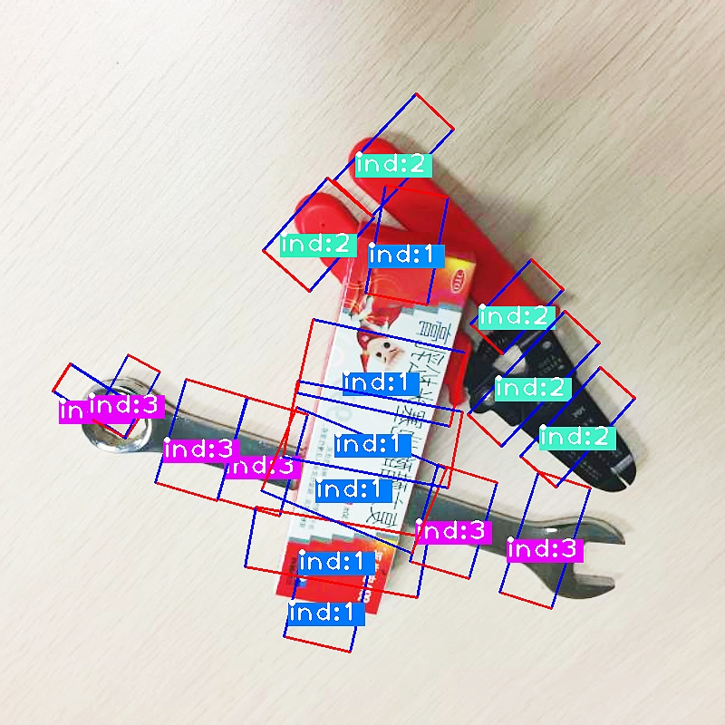
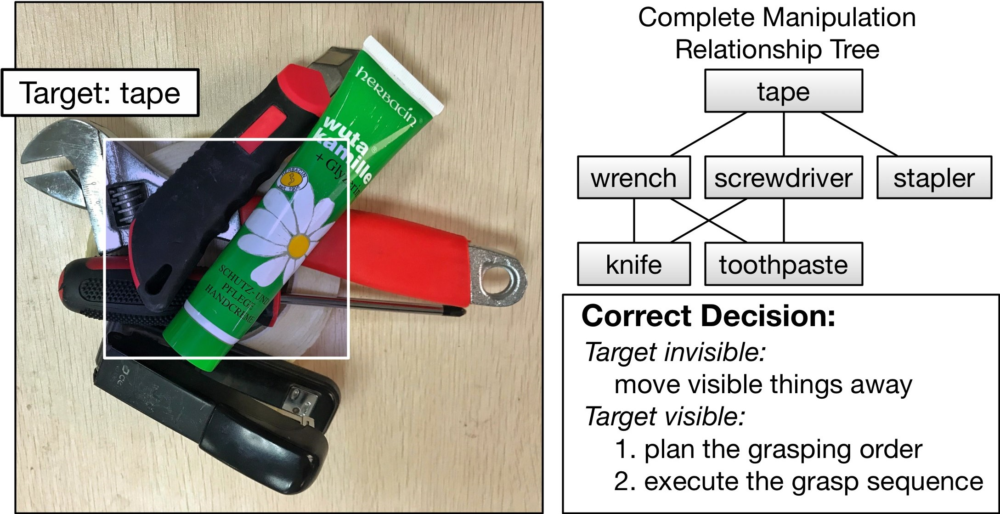
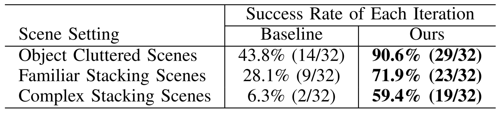

Proposed a deep reinforcement learning method introducing hindsight methodology to TRPO to tackle the challenge of sparse reward in RL; Achieved high data-efficiency in sparse reward environments and restricted variance by proposing a Quadratic KL-divergence constraint.
Site Bai
Bio
I currently looking for an internship due to the U.S. visa restriction.
Previously, I recieved my Bachelor Degree in Computer Science at Xi'an Jiaotong University (XJTU) with honor. From 2017 - 2020, I worked as a research assistant at the Institute of Artificial Intelligence and Robotics with Prof. Xuguang Lan, Prof. Nanning Zheng and Hanbo Zhang on Deep Reinforcement Learning. I am also interested in and have research experinece on Machine Learning, Robotics and Computer Vision.
I have deferred my graduate school offer and will be joining Purdue CS as a Ph.D. student to work on Statistical Machine Learning and Learning Theory with Prof. Jean Honorio in 2021 Spring.
News
Offered admission to CS PhD with full sholarship from Purdue University02/27/2020
A marvelous week with Prof. David Hsu from NUS during his visit to our group 11/30/2019
Wonderful time at Venetian Hotel, Macau, China to attend IROS 2019 11/07/2019
2 papers I participated in got accepted in IROS 2019 06/20/2019
Education
 Purdue UniversityJan. 2021. - Dec. 2025.
Purdue UniversityJan. 2021. - Dec. 2025.
Ph.D. in Computer ScienceWest Lafayette, USA
 Xi’an Jiaotong University, Qian Xuesen CollegeSep. 2016. - Jun. 2020.
Xi’an Jiaotong University, Qian Xuesen CollegeSep. 2016. - Jun. 2020.
Bachelor of Engineering in Computer Science (Honors Science Program)Xi'an, China
Xi’an Jiaotong University, Qian Xuesen CollegeSep. 2014 - Sep. 2016.
Special Class for the Gifted Young / Honors Youth ProgramXi'an, China
 University of California, BerkeleyAug. 2018. - Dec. 2018.
University of California, BerkeleyAug. 2018. - Dec. 2018.
International Study ProgramBerkeley, USA
National University of SingaporeJul. 2018. - Aug. 2018.
Summer WorkshopSingapore
Publication
Preprint
Hindsight Trust Region Policy Optimization [pdf] [code]
arXiv preprint arXiv:1907.12439. Under review in ICML 2020.
Hanbo Zhang*, Site Bai*, Xuguang Lan, Nanning Zheng
Published

ROI-based Robotic Grasp Detection for Object Overlapping Scenes [pdf][code][dataset]
2019 IEEE/RSJ International Conference on Intelligent Robots and Systems (IROS 2019)
Hanbo Zhang, Xuguang Lan, Site Bai, Xinwen Zhou, Zhiqiang Tian, Nanning Zheng
Proposed a grasp detection algorithm called ROI-GD by extracting features from Region of Interest(ROI); Achieved successful robotic grasps at the rates of 92.5\% and 83.8\% in single-object and multi-object scenes.
A Multi-task Convolutional Neural Network for Autonomous Robotic Grasping in Object Stacking Scenes [pdf][code][video][dataset]
2019 IEEE/RSJ International Conference on Intelligent Robots and Systems (IROS 2019)
Hanbo Zhang, Xuguang Lan, Site Bai, Lipeng Wan, Chenjie Yang, Nanning Zheng
Proposed a multi-task convolutional neural network integrating vision-based robotic grasp detection and visual manipulation relationship reasoning together; Realized successful autonomous grasps with a success rate of 90.6\%, 71.9\% and 59.4\% in object cluttered scenes, familiar stacking scenes and complex stacking scenes.
 Research Experience
Institute of Artificial Intelligence and Robotics, Xi'an Jiaotong University | Research Intern
Supervisor: Prof. Xuguang Lan and Prof. Nanning ZhengDec. 2017 - Apr. 2020
Hindsight Trust Region Policy Optimization:Derived functions involved in the optimization problem of Hindsight TRPO; Completed all the experiments of baseline algorithms including Hindsight Policy Gradient(HPG), Hindsight Experience Replay(HER) and Trust Region Policy Optimization(TRPO); Played with many deep reinforcement learning algorithms along the way, including mainstream valued-based algorithms like Deuling DQN, etc. and policy-based algorithms including Natural Policy Gradient(NPG), Deep Deterministic Policy Gradient(DDPG), Guided Policy Search(GPS), Generative Advantage Estimation(GAE), etc.
ROI-based Robotic Grasp Detection:
Labeled more than 600 images including the object instances, manipulation relationships, contributing to a multi-object grasping dataset; Learned several grasping algorithms including Hand-eye coordination for robotic grasping and Visuomotor Controller for Grasping; Implemented Baxter robot interface using ROS.
Robotic Grasping System for Object Stacking Scenes:
Debugged the programs for grasping experiments; Fine-tunned the parameters of the algorithm; Collated part of the paper.
Watercraft Detection:
Played with mainstream detection algorithms including R-CNN series, SSD and YOLO series; Achieved the highest accuracy of 90.4% with faster-RCNN.
Other Contribution: Visual Manipulation Relationship Dataset.
School of Computing Summer Workshop, National University of Singapore | Participant
Supervisor: Prof. Ng Teck KhimJul. 2018 - Aug. 2018.
Deep ConvNet Based Image Style Migration:Achieved style migration on scenery photos and doodling images applying VGG-19; Learned Wavelet Transformation, Fast Fourier Transformation, edge detection filters, denoising, etc., for image processing along the way; Demonstrated this project with a poster.
National Undergraduate Mathematical Contest in Modeling | Contestant
Supervisor: Dr. Lei Chen and Prof. Huanqin Li | Team: Zhuo Zhi and Zexiao WangJul. 2017 - Sep. 2017.
CT System Parameter Calibration and CT Image Construction:Constructed a mathematical model to calibrate CT scanning angles; Used plane geometry to estimate the system initial value; Applied Filtered Backprojection algorithm to construct CT images.

best99317@stu.xjtu.edu.cn Curriculum Vitae
+86 189 8605 2591 LinkedIn
Wuhan, Hubei, China Github
 Google Scholar
03/17/1999
Google Scholar
03/17/1999
Skills
Basic Programing Laguages: Python · C/C++
ML Packages: Pytorch · scikit-learn · TensorFlow
Robotic Developing Tools: ROS · Gazebo · Arduino
Web Developing Tools: HTML · Javascript
Database Managing: JAVA · SQL
Text Editing: LATEX · Office · Markdown
Other Stuffs: Photoshop · Premiere
Selected Honors & Awards
2019IROS 2019 Travel Award
2018"Siyuan" Scholarship of Xi’an Jiaotong University (15%)
3rd Prize in National English Competition (3%)
20172nd Prize in National Mathematical Modeling Contest (3%)
Outstanding Individual in Social Activities of XJTU (1%)
"Siyuan" Scholarship of Xi’an Jiaotong University (15%)
20161st Prize in XJTU English Translation Contest (3%)
3st Prize in XJTU English Reading Contest (20%)
3st Prize in XJTU English Speaking Contest (20%)
Languages
English
90%
Chinese
100%